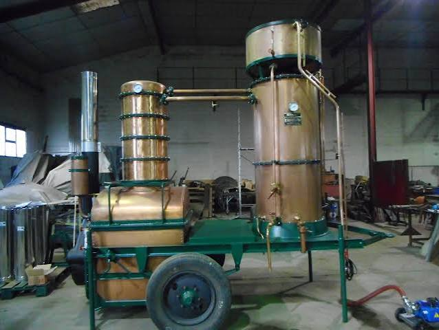
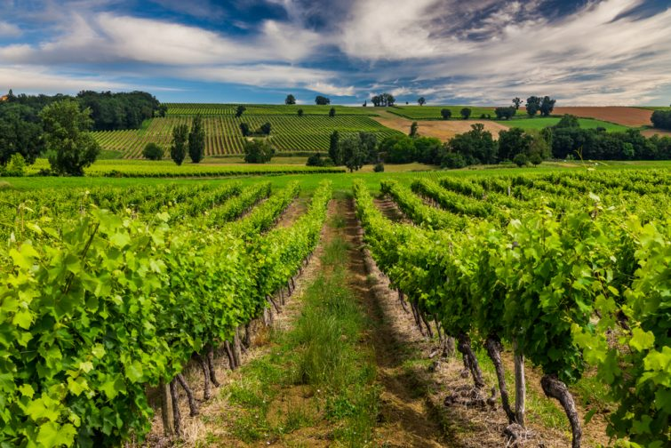

Armagnac
AOP


⟹ Vins & Boissons ⟸
L'Armagnac est la plus ancienne eau-de-vie de France. Née dans les terres du Gers, du Lot-et-Garonne et des Landes au cœur de la Gascogne, elle précède de plus de deux siècles la naissance du Cognac. Rustique, authentique et singulièrement complexe, l'Armagnac incarne l'âme profonde du Sud-Ouest — une terre de vignes, de foie gras et de traditions séculaires jalousement préservées.

La première mention écrite de l'Armagnac remonte à 1411, dans un écrit du prieur de Eauze évoquant ses vertus médicinales. Pendant des siècles, cette eau-de-vie est produite dans des conditions artisanales, distillée par des alambics ambulants qui parcourent les campagnes gasconnes de ferme en ferme à l'automne, après les vendanges. Cette tradition du bouilleur de cru itinérant, unique en France, a profondément marqué l'identité et le caractère de l'Armagnac.
« L'Armagnac est le cognac du pauvre — mais le pauvre a bien meilleur goût que le riche. »
— Alexandre Dumas, Le Grand Dictionnaire de Cuisine, 1873Contrairement au Cognac, qui s'est développé grâce au commerce maritime et aux grandes maisons de négoce internationales, l'Armagnac est resté longtemps un produit confidentiel, consommé localement et vendu en direct par les producteurs. C'est cette fidélité à ses racines paysannes qui lui confère aujourd'hui son caractère si particulier — plus rustique, plus expressif et plus millésimé que son voisin charentais.
L'AOP Armagnac, reconnue officiellement en 1936, est l'une des premières appellations d'eau-de-vie de France. Elle délimite une zone de production couvrant trois terroirs distincts en Gascogne, chacun donnant des eaux-de-vie au caractère bien différencié. Aujourd'hui, l'Armagnac connaît une renaissance remarquable, portée par une nouvelle génération de producteurs et par l'engouement mondial pour les spiritueux de terroir authentiques et millésimés.

L'Armagnac en digestif : servi dans un verre tulipe à température ambiante, un Armagnac de 15 à 20 ans se révèle avec une patience et une générosité rares. Ses arômes de pruneaux d'Agen, de café, de réglisse, de tabac blond et d'épices douces se déploient lentement. Un millésimé des grandes années est à déguster seul, comme une œuvre d'art.
L'Armagnac Blanche : non vieillie, transparente et très fruitée, l'Armagnac Blanche se déguste frais, comme un calvados blanc, avec quelques glaçons ou en cocktail. Elle révèle une fraîcheur et un fruité incomparables — raisin frais, agrumes, fleurs blanches. Un produit confidentiel en pleine renaissance.
Accord avec le foie gras et les pruneaux : l'accord classique gascon par excellence — foie gras poêlé aux pruneaux d'Agen flambés à l'Armagnac. La richesse du foie, la douceur des pruneaux et le caractère de l'eau-de-vie composent l'un des plats les plus emblématiques du Sud-Ouest.
Les pruneaux à l'Armagnac : des pruneaux d'Agen macérés pendant plusieurs mois dans un Armagnac VSOP — une confiserie traditionnelle gasconne servie en digestif, sur de la glace à la vanille ou en accompagnement d'un gâteau basque. Incontournable dans toutes les fermes du Gers.
L'Armagnac en cuisine : flambé sur des crêpes, utilisé pour déglacer une poêle de magret ou macérer des fruits secs, l'Armagnac apporte une profondeur aromatique unique que le Cognac ne peut égaler dans les recettes gasconnes traditionnelles. La tourtière landaise aux pruneaux et à l'Armagnac est le dessert emblématique de cette alliance.
En cocktail : l'Armagnac Sour (Armagnac, citron, sucre, blanc d'œuf), le Gascon Mule (Armagnac, ginger beer, citron vert) ou simplement l'Armagnac-tonic sont des façons modernes de découvrir ce spiritueux ancestral dans un registre plus léger et accessible.
Le pays de l'Armagnac est une destination œnotouristique encore confidentielle mais d'une richesse exceptionnelle — châteaux gascons, bastides médiévales et domaines familiaux y accueillent les visiteurs dans une atmosphère authentique et chaleureuse.
Éauze (Gers) — Capitale historique du Bas-Armagnac, avec son marché médiéval et ses nombreux domaines ouverts à la visite. Le musée archéologique conserve un trésor gallo-romain exceptionnel trouvé dans les vignes. Les caves de la ville regorgent de millésimés rares.
Condom (Gers) — Capitale de la Ténarèze et de l'Armagnac, avec son musée de l'Armagnac installé dans un palais épiscopal du XVIIIe siècle. Nombreuses maisons de négoce et producteurs à visiter dans les environs.
Château de Castex d'Armagnac (Cazaubon) — Domaine historique du Bas-Armagnac proposant des visites guidées des vignes, de la distillerie et des chais, avec dégustation de millésimés remontant aux années 1950.
Domaine d'Ognoas (Arthez-d'Armagnac) — Propriété du Conseil Général des Landes, ce domaine conserve des eaux-de-vie millésimées depuis 1830. La distillerie à alambic ambulant est toujours en activité à l'automne — un spectacle rare et émouvant.
La Route de l'Armagnac — Circuit touristique balisé traversant les trois terroirs de l'appellation, passant par des bastides médiévales, des châteaux gascons et des domaines familiaux. La meilleure façon de découvrir la diversité de l'Armagnac et l'hospitalité légendaire des Gascons.